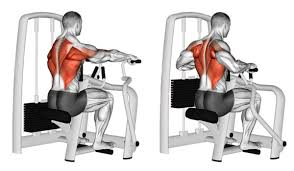
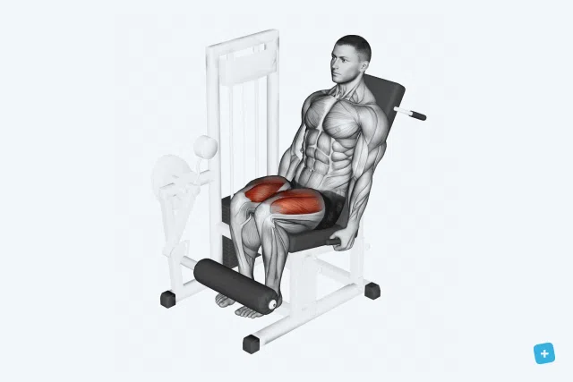
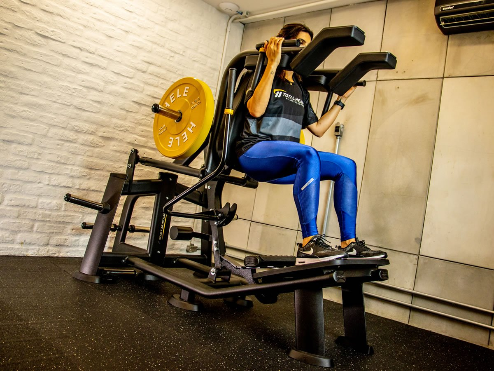

remada articulada
puxe ate a altura do seu queixo, evitando o movimento de alavanca com o tronco

remada articulada
faça o movimento pensando em dar cutuveladas e nao em puxar, sempre fechando as escapulas e estufando o peito

face pull
pega uma barra em V, coloque na altura do seu ombro de 2 passos para traz e puxe te seu rosto

elevacao lateral
pega o pesinho e lateralmente eleva ate a altura do seu ombre, se tiver pesado pode dar uma leve dobrada no cutuvelo

elevacao frontal
pega um pesinho e eleva frontalmente ate a altura do seu ombro sem dobrar o cutuvelo

leg press
coloque os pes em uma posicao confortavel, deixe os joelhos paralelos e sem estender a perna 100%

cadeira extensora
regule ate ficar confortavel e estenda a perna

agachamento squat
desça ate onde consegue e tente nao tirar a lombar do aparelho